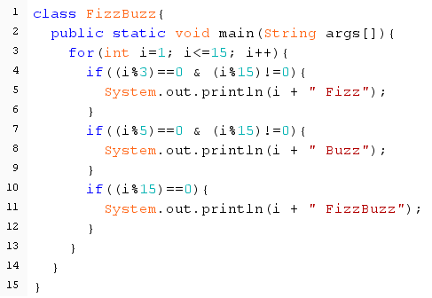
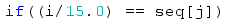
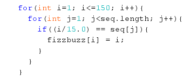

This is experimental website for hands-on Java examples. In order to follow the exercises you should already know basic syntax. Especially control flow statements, loops, variables, arrays. But even if you are a complete beginner, the below first tutorial is not that hard.
FizzBuzz is a very simple exercise. Usually FizzBuzz is used to weed out potential candidates for the position of Junior Developer.
In FizzBuzz the program should print Fizz if the number is divisible by 3, print Buzz if the number is divisible by 5 and print FizzBuzz if the number is divisible both by 3 and 5 at the same time.
Almost every known FizzBuzz implementation uses modulus operator % which shows the number that is left after division, i.e. the remainder of the division. For example how many times can you fit 5 in 17. That will be 3 times plus there is number 2 that remains after. Thus 17%5 = 2.
Below code snippet shows my implementation of FizzBuzz. It is not ideal. But this is a point of FizzBuzz, there are many ways you can implement it. That is probably one of the reasons it is used to check for basic programming skills.

class FizzBuzz{
public static void main(String args[]){
for(int i=1; i<=100; i++){
if((i%3)==0 & (i%15)!=0){
System.out.println(i + " Fizz");
}
if((i%5)==0 & (i%15)!=0){
System.out.println(i + " Buzz");
}
if((i%15)==0){
System.out.println(i + " FizzBuzz");
}
}
}
}
But what if programming language doesn't have a modulus operator or some other features and facilities that make certain algroithms easier to implement in a few lines of code. Then one have to create a workaround. This is how computer programming works. It is always a lot of workarounds. Computer Science degrees imply that one should be comfortable with creating new solutions with existing tools.
Now try to implement FizzBuzz without modulus operator. For CS graduates it should be easy, that is what they are taught to do - come up with new solutions.
Let's try to come up with a solution to FizzBuzz without modulus operator. Computer Scientist should find something, maybe a pattern that will help him to solve the problem.
When there is a sequence of numbers from 1 to 100 fizzbuzz numbers are 15, 30, 45, 60, 75, 90. Hmmm, so 15/15=1, 30/15=2, 45/15=3, 60/15=4, 75/15=5, 90/15=6. Interesting huh. Have you noticed the pattern. Results of division is a sequence itself: 1, 2, 3, 4, 5, 6. That will help us to filter out fizzbuzz numbers. The same with fizz (3) and buzz (5) numbers.
The code snippet below doesn't really use the above finding but it was the thought process when I was writing the code. What really helped was the use of float primitive in the if condition. Use of 15.0 made Java automatically compute the expression as float literals, so 14/15 was not truncated to 0, or 16/15 was not truncated to 1, giving us erroneous results.
Float literal inside  is what makes the core of the solution

class FizzBuzzWithoutModulus{
public static void main(String[] args){
//instantiate arrays for fizzbuzz, buzz and fizz, which will later be
//populated with corresponding numbers.
//For example for fizz the array will be 0,0,0,3,0,0,3,0,0,3,...
int[] fizzbuzz = new int[151];
int[] buzz = new int[151];
int[] fizz = new int[151];
int[] seq = new int[151];
for(int i=1; i<=150; i++){
seq[i] = i;
}
//Populate fizzbuzz array with numbers that are divisible by 15
for(int i=1; i<=150; i++){
for(int j=1; j<seq.length; j++){
if((i/15.0) == seq[j]){
fizzbuzz[i] = i;
}
}
}
//Populate buzz array with numbers that are divisible by 5
for(int i=1; i<=150; i++){
for(int j=1; j<seq.length; j++){
if((i/5.0) == seq[j]){
buzz[i] = i;
}
}
}
//Populate fizz array with numbers that are divisible by 3
for(int i=1; i<=150; i++){
for(int j=1; j<seq.length; j++){
if((i/3.0) == seq[j]){
fizz[i] = i;
}
}
}
for(int i=0; i<=150; i++){
if(fizz[i]!=0 & fizz[i] != fizzbuzz[i]){
System.out.println(fizz[i] + " fizz");
}
if(buzz[i]!=0 & buzz[i] != fizzbuzz[i]){
System.out.println(buzz[i] + " buzz");
}
if(fizzbuzz[i]!=0){
System.out.println(fizzbuzz[i] + " fizzbuzz");
}
}
}
}